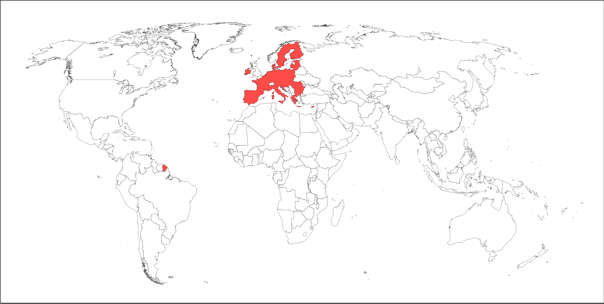
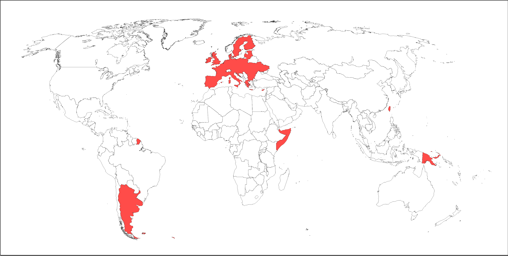
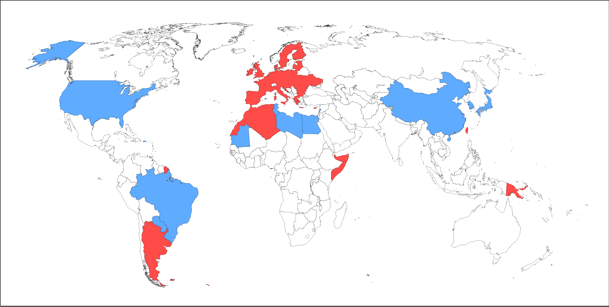

| Conflictos de Unificación Planetaria | |||||||||||||||||||||||||
|
|||||||||||||||||||||||||
| Belixerantes | |||||||||||||||||||||||||
|
"Terceira Guerra Mundial" redirixe eiquí.
Os conflictos de unificación planetaria foron unha serie de episodios bélicos que se extenderon dende o 6 de Xuño de 2037 ata o 1 de Abril de 2044. Neles, enfrentaronse o Imperio de Eridanus e a maioria de nacións independentes. Pese a tratarse técnicamente de conflictos independentes, soense tratar todos xuntos nun mesmo contexto histórico. Dentro distes conflictos viuse o uso de armas nucleares nunha guerra activa por segunda vez na historia, ainda que sen éxito.
 |
Eridanus tras a sua formación. |
3 anos antes do comezo das hostilidades, un golpe de estado situara a Cássidy Ortiz coma emperador da antigua Unión Europea, que pasarase a chamar o Imperio de Eridanus. Tras unha rápida militarización, o Imperio anexionara, nun movemento moi criticado, aos microestados europeos tras chegar a un acordo con eles.
Mentres, o resto do mundo miraba con desconfianza a nova potencia, a que moitos tildaban de imperialista e a cuxo lider se via coma unha persoa fora de si. As constantes mostrar de divindade por parte do emperador, especialmente adicadas á creación de fabricas militares, daban a entender que Eridanus non seria axeno ao conflicto.
En Arxentina a situación economica e social levaba varias decadas de decadencia tralo mandato de Javier Milei, e tras unha serie de serios disturbios, o pais encontrabase ao borde da anarquia. Con iste contexto, o exercito imperial desembarcou preto de Bos Aires co Casus Belli de 'pacificar a rexión'. Na contenda bélica participou tamén Uruguay, que se puxo do lado da Arxentina. Malia os seus esforzos, ambos paises caeron en apenas dous meses.
Apenas 3 dias despois da anexión formal da Arxentina e Uruguay, Ucraina e Moldavia unironse ao imperio ao completar o proceso de adesión á UE e que, tras un referendo popular, se convertera nun proceso de adesión ao Imperio de Eridanus. Isto fixo que as potencias mundiais se percatasen de que o 85% da produción de grano estaba agora nas mans do Imperio de Ortiz.
Tras a invasión de Arxentina, Ortiz desembarcaria o seu exercito en Somalia co mesmo motivo, e tras apenas 3 dias de guerra, fixose co control total. Ista velocidade debiuse principalmente a que Somalia non contaba cun exercito organizado, e as poucas milicias existentes negaronse a loitar, polo que o exercito Eridanense entrou sen problemas no pais.
Duas semanas despois, intervería unha vez mais en Papúa Nova Guinea, onde debido ao terreo o Imperio tardaria case 3 meses en facerse co control total do pais.
Xusto a finais do 2037, Eridanus anexionariase pacificamente Taiwan debido á alta deuda que estaba acumulando o goberno da illa tras a guerra Sino-Taiwanesa.
Ortiz seguiria a súa politica de intervencionismo en nacións con serios conflictos internos invadindo o 28 de Xaneiro de 2038 o Reino Unido. Isto puxo en alerta a todos os paises con asinto permanente no consexo de seguridade da ONU, pois o Reino Unido, ademais de ser un deles, posuia armamento nuclear. Malia iso, aos 12 dias do comezo da guerra, co exercito Eridanense ás portas de Londres tras encontrar unha resistencia mínima no desembarco na costa de Dover, o Primeiro Ministro británico admitiria que ningunha das 350 oxivas nucleares ca posuian estaban funcionais. 5 días despois, coa caida de Londres, o Reino Unido rendiriase.
Ista foi a intervención que puxo en alerta a todas as potencias, pois a caida dun país occidental nun periodo tan curto de tempo, levou a moitos a pensar ca calquera pais podería ser o seguinte obxetivo do Imperio, e que ademais, non tardaría moito en atacar de novo. Istes medos manifestarianse coa invasión inxustificada de Marrocos e Alxeria.
 |
Eridanus tras a invasión de Reino Unido. |
Artigo principal: Invasión Eridanense do Sáhara Occidental.
A politica expansionista de Ortiz pasaba por controlar a maior parte da producción de alimento posibel, e coa incorporación da Ucraina e a invasión da Arxentina, o último obxectivo do Imperio de Eridanus era controlar as reservas de Fosforo do Sáhara Occidental. A diferencia dos outros paises intervidos, o Sáhara non se encontraba en situación de conflicto interno, debido á ocupación que sufria das forzas marroquís. Ademais, unha invasión frontal de territorio provocaria a ira de Alxeria, que era un enemigo de Marrocos interesado na independenza do Sáhara.
En resposta a iste dilema, o Imperio de Eridanus declaroulle a guerra a Alxeria e Marrocos (Incluindo o Sáhara Occidental ocupado) o 26 de Abril de 2038. Iste movemento levou a moitos paises a formar unha coalición contra o imperio. Nista coalición participaron paises coma Estados Unidos, China, e a maioria de paises do norte de África.
A coalición non tivo éxito en evitar a conquista distes paises, pero si que conseguio levar a Erdianus a un estado de economía de guerra, na que a divinidade do Emperador era utilizada a diario para frear os problemas que comenzaban a xurdir dentro do Imperio. Pese a que a coalición rebaixou as hostilidades tras a anexión formal do Sáhara, retomariá rapidamente cando Eridnaus comenzou a atacar militarmente en territorio de membros da coalicción.
Moitos historiadores da época chamaron a iste conflicto a "Terceira Guerra Mundial", ainda que hoxe en día non é moi habitual encaixar iste conflicto coas guerras mundais.
 |
Eridanus e a coalición. |
Tras o establecemento da coalición, os conflictos comenzaron rápidamente. Unha vez mais, potencias nucleares encontrabanse en frentes opostos dunha guerra, pero dista vez todas as partes involucradas acordaron non usar armas nucleares, polo menos ao comezo da guerra.
Inicialmente, Eridanus lanzou ataques contra Túnez e Mauritania, para asegurar o control que tiña sobre ambos. Despois, avanzou principalmente no Sáhara Libanés e, tras un fracasado intento de tomar a costa Arxelina, o frente conxelouse temporalmente.
Ante as claras intencións do imperio de anexionar todos os participantes da guerra, Chad, Níxer, Mali, Senegal, Gambia e Guinea-Bisau unironse á coalición pra loitar pola independenza de Mauritania. Pola súa parte, o secretario de estado de EEUU comezou unha xira coa intención de que mais dos seus aliados se uniran á guerra.
| Conflictos de Unificación Planetaria | |||||||||||||||||||||||||
|
|||||||||||||||||||||||||
| Belixerantes | |||||||||||||||||||||||||
|
 Arexentina
Arexentina Uruguay
Uruguay Reino Unido
Reino Unido